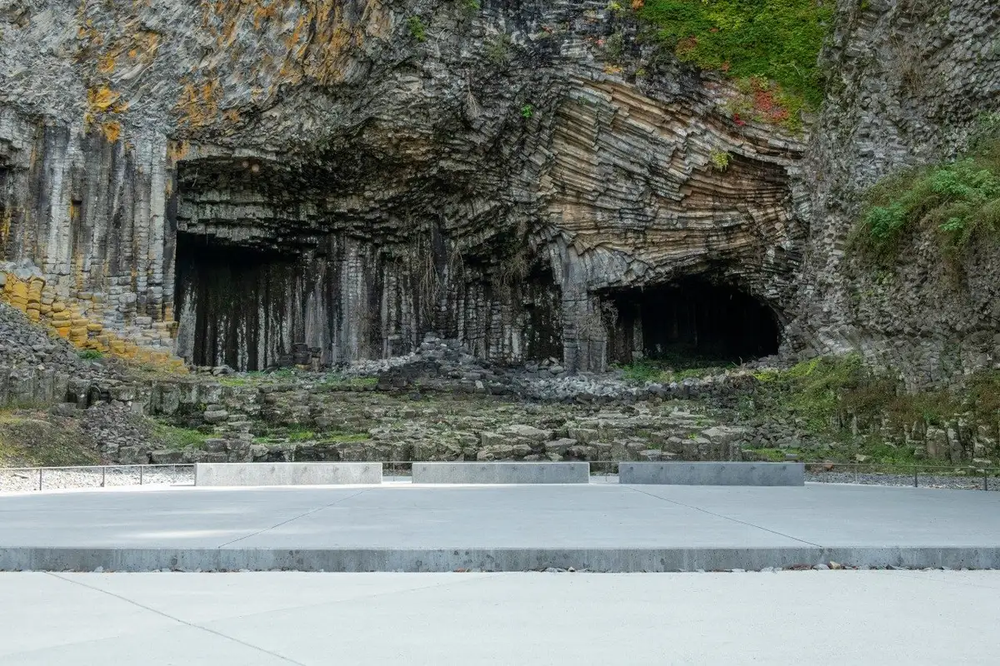
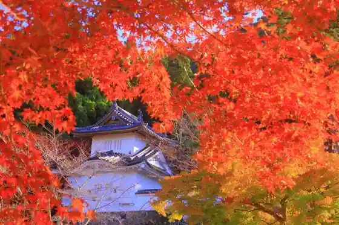
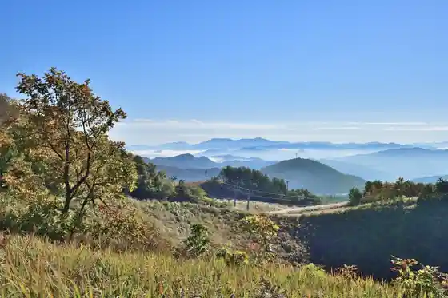
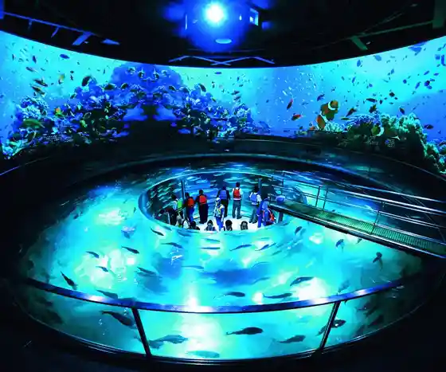

Toyooka
Toyooka · Hyogo
Toyooka
Highlighted on the Hyogo map.

Stay
Nishimuraya Honkan
Historic Kinosaki Onsen ryokan since the Ansei era with Japanese garden rooms and soft chloride baths
Yamamotoya
350-year-old inn on the willow-lined street in central Kinosaki, handy for the soto-yu bath circuit
Ryokan Kiraku
Kinosaki inn known for private baths, Tajima beef, and crab cuisine near the outer hot springs
Dining
Oshokujidokoro Yamayoshi
Seafood restaurant by JR Kinosaki-Onsen Station serving Kasumi crab bowls and four-don set lunches
Takeuchi Fish Shop
Fresh-fish counter on the station street famous for made-to-order grilled chikuwa sticks
Onsen
Kinosaki Onsen
Historic hot-spring town known for yukata strolls and the seven public outer baths
Shop
Kakutani Toubee Kinosaki Main Shop
Shop specializing in matured-crab crackers and crab sweets for walking snacks
Sights
Izushi Castle Ruins
Stone walls and stair approaches of the former Izushi castle hill above the castle town

Genbudo Park
National natural monument of hexagonal basalt columns carved by the Maruyama River
Kannabe Highlands
Plateau resort area above Toyooka for skiing, hiking, and volcanic highland views

Kinosaki Marine World
Aquarium and marine park on the Sea of Japan coast near Kinosaki
